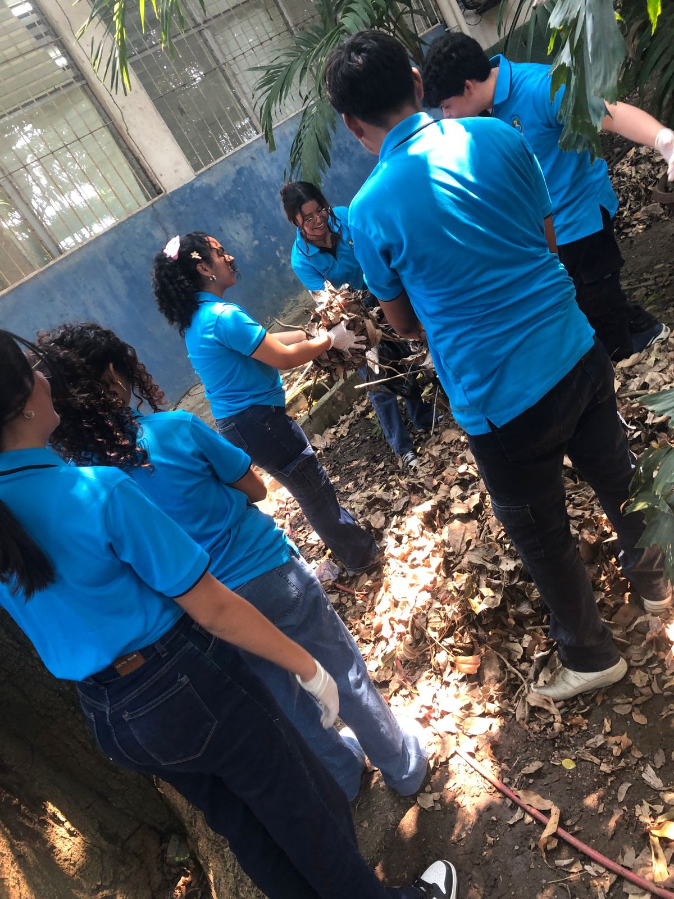

La carrera de informática brinda altas oportunidades laborales, salarios competitivos y la capacidad de resolver problemas complejos mediante la tecnología. Ofrece una formación versátil para diseñar software, gestionar datos, garantizar la ciberseguridad y liderar proyectos de inteligencia artificial o robótica, siendo una carrera esencial en la transformación digita.
-Alta Demanda Laboral: Existe un campo de trabajo amplio y en constante crecimiento, no solo en empresas de tecnología, sino en casi cualquier industria. -Versatilidad de Roles: Permite trabajar como desarrollador de software, ingeniero de datos, analista de ciberseguridad, experto en IA, o arquitecto de redes. -Desarrollo de Habilidades Lógicas: Fomenta el pensamiento crítico, la resolución de problemas complejos, la creatividad y la capacidad de abstracción. -Salarios Competitivos:El sector tecnológico es reconocido por ofrecer sueldos atractivos, incluso en niveles técnicos iniciales, como mencionan en